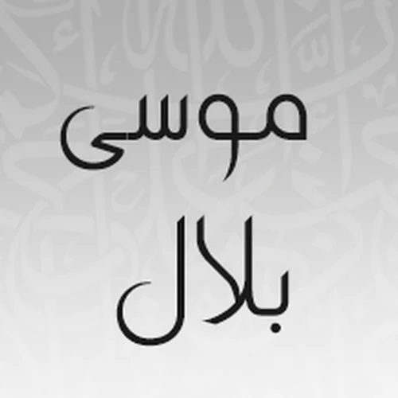
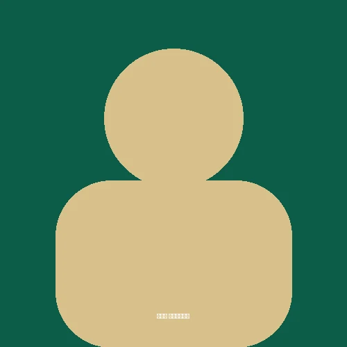

سورة النمل بصوت الشيخ العيون الكوشي
الاستماع لسورة النمل بصوت الشيخ العيون الكوشي مع إمكانية التحميل المباشر للسورة بصيغة MP3
تحميل سورة النمل MP3سور أخرى بصوت الشيخ العيون الكوشي
سورة النمل بصوت قراء آخرين

سورة النمل بصوت الشيخ موسى بلال سورة النمل بصوت الشيخ أنس العمادي
سورة النمل بصوت الشيخ أنس العمادي
 سورة النمل بصوت الشيخ طارق عبدالغني دعوب
سورة النمل بصوت الشيخ طارق عبدالغني دعوب
 سورة النمل بصوت الشيخ أكرم العلاقمي
سورة النمل بصوت الشيخ أكرم العلاقمي

سورة النمل بصوت الشيخ سعد المقرن سورة النمل بصوت الشيخ مصطفى اللاهوني
سورة النمل بصوت الشيخ مصطفى اللاهوني
 سورة النمل بصوت الشيخ ياسر سلامة
سورة النمل بصوت الشيخ ياسر سلامة
 سورة النمل بصوت الشيخ جمال شاكر عبدالله
سورة النمل بصوت الشيخ جمال شاكر عبدالله
 سورة النمل بصوت الشيخ رشيد صوفي
سورة النمل بصوت الشيخ رشيد صوفي
 سورة النمل بصوت الشيخ عبدالرحمن الشحات
سورة النمل بصوت الشيخ عبدالرحمن الشحات
 سورة النمل بصوت الشيخ خالد القحطاني
سورة النمل بصوت الشيخ خالد القحطاني
 سورة النمل بصوت الشيخ خالد كريم محمدي
سورة النمل بصوت الشيخ خالد كريم محمدي
 سورة النمل بصوت الشيخ عادل ريان
سورة النمل بصوت الشيخ عادل ريان
 سورة النمل بصوت الشيخ شيرزاد عبدالرحمن طاهر
سورة النمل بصوت الشيخ شيرزاد عبدالرحمن طاهر
 سورة النمل بصوت الشيخ أحمد الحواشي
سورة النمل بصوت الشيخ أحمد الحواشي
 سورة النمل بصوت الشيخ صالح الشمراني
سورة النمل بصوت الشيخ صالح الشمراني
 سورة النمل بصوت الشيخ عبدالباسط عبدالصمد
سورة النمل بصوت الشيخ جمعان العصيمي
سورة النمل بصوت الشيخ عبدالباسط عبدالصمد
سورة النمل بصوت الشيخ جمعان العصيمي
 سورة النمل بصوت الشيخ محمد صديق المنشاوي
سورة النمل بصوت الشيخ محمد صديق المنشاوي
 سورة النمل بصوت الشيخ إدريس أبكر
سورة النمل بصوت الشيخ إدريس أبكر
 سورة النمل بصوت الشيخ محمود الشيمي
سورة النمل بصوت الشيخ محمود الشيمي
 سورة النمل بصوت الشيخ محمد المحيسني
سورة النمل بصوت الشيخ محمد المحيسني
 سورة النمل بصوت الشيخ عبدالباري الثبيتي
سورة النمل بصوت الشيخ عبدالباري الثبيتي
 سورة النمل بصوت الشيخ إبراهيم الأخضر
سورة النمل بصوت الشيخ إبراهيم الأخضر
 سورة النمل بصوت الشيخ أحمد صابر
سورة النمل بصوت الشيخ أحمد صابر
 سورة النمل بصوت الشيخ صابر عبدالحكم
سورة النمل بصوت الشيخ صابر عبدالحكم
 سورة النمل بصوت الشيخ نعمة الحسان
سورة النمل بصوت الشيخ نعمة الحسان
 سورة النمل بصوت الشيخ ناصر الماجد
سورة النمل بصوت الشيخ ناصر الماجد